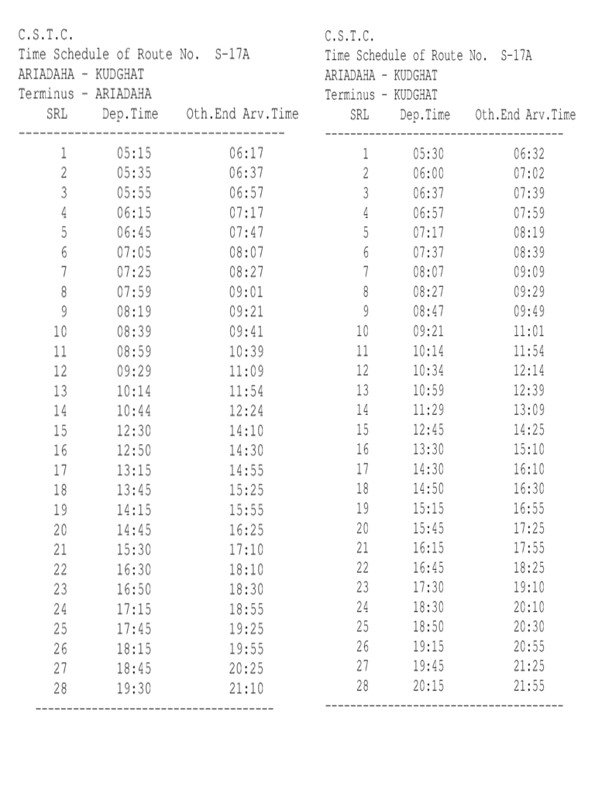

S-17A Kolkata City Bus Timetable
ARIADAHA → KUDGHAT and reverse direction departure and terminal arrival times.
Departures 56First 5:15 AMLast 8:15 PMDirections 2
ARIADAHA KUDGHAT
| # | Departure | Arrival | Ride |
|---|---|---|---|
| 1 | 5:15 AM | 6:17 AM | 1h 02m |
| 2 | 5:35 AM | 6:37 AM | 1h 02m |
| 3 | 5:55 AM | 6:57 AM | 1h 02m |
| 4 | 6:15 AM | 7:17 AM | 1h 02m |
| 5 | 6:45 AM | 7:47 AM | 1h 02m |
| 6 | 7:05 AM | 8:07 AM | 1h 02m |
| 7 | 7:25 AM | 8:27 AM | 1h 02m |
| 8 | 7:59 AM | 9:01 AM | 1h 02m |
| 9 | 8:19 AM | 9:21 AM | 1h 02m |
| 10 | 8:39 AM | 9:41 AM | 1h 02m |
| 11 | 8:59 AM | 10:39 AM | 1h 40m |
| 12 | 9:29 AM | 11:09 AM | 1h 40m |
| 13 | 10:14 AM | 11:54 AM | 1h 40m |
| 14 | 10:44 AM | 12:24 PM | 1h 40m |
| 15 | 12:30 PM | 2:10 PM | 1h 40m |
| 16 | 12:50 PM | 2:30 PM | 1h 40m |
| 17 | 1:15 PM | 2:55 PM | 1h 40m |
| 18 | 1:45 PM | 3:25 PM | 1h 40m |
| 19 | 2:15 PM | 3:55 PM | 1h 40m |
| 20 | 2:45 PM | 4:25 PM | 1h 40m |
| 21 | 3:30 PM | 5:10 PM | 1h 40m |
| 22 | 4:30 PM | 6:10 PM | 1h 40m |
| 23 | 4:50 PM | 6:30 PM | 1h 40m |
| 24 | 5:15 PM | 6:55 PM | 1h 40m |
| 25 | 5:45 PM | 7:25 PM | 1h 40m |
| 26 | 6:15 PM | 7:55 PM | 1h 40m |
| 27 | 6:45 PM | 8:25 PM | 1h 40m |
| 28 | 7:30 PM | 9:10 PM | 1h 40m |
Via / stoppages23 listed
- Ariadaha
- Dakshineswar
- Alambazar
- Bonhooghly
- Baghajatin Rd
- Baranagar Bazar
- Bibir Bazar
- Cossipur
- Bag Bazar
- Sovabazar
- M.G.Road Jn
- Colutala St
- B.B.Ganguly St
- B.B.D.Bag
- Espl
- Parkstreet
- Elgin Rd
- Hazra Rd
- R.B.Ave
- Tollygunge Phari
- Tollygunge Tram Depot
- Chandi Ghosh
- Kudghat
KUDGHAT ARIADAHA
| # | Departure | Arrival | Ride |
|---|---|---|---|
| 1 | 5:30 AM | 6:32 AM | 1h 02m |
| 2 | 6:00 AM | 7:02 AM | 1h 02m |
| 3 | 6:37 AM | 7:39 AM | 1h 02m |
| 4 | 6:57 AM | 7:59 AM | 1h 02m |
| 5 | 7:17 AM | 8:19 AM | 1h 02m |
| 6 | 7:37 AM | 8:39 AM | 1h 02m |
| 7 | 8:07 AM | 9:09 AM | 1h 02m |
| 8 | 8:27 AM | 9:29 AM | 1h 02m |
| 9 | 8:47 AM | 9:49 AM | 1h 02m |
| 10 | 9:21 AM | 11:01 AM | 1h 40m |
| 11 | 10:14 AM | 11:54 AM | 1h 40m |
| 12 | 10:34 AM | 12:14 PM | 1h 40m |
| 13 | 10:59 AM | 12:39 PM | 1h 40m |
| 14 | 11:29 AM | 1:09 PM | 1h 40m |
| 15 | 12:45 PM | 2:25 PM | 1h 40m |
| 16 | 1:30 PM | 3:10 PM | 1h 40m |
| 17 | 2:30 PM | 4:10 PM | 1h 40m |
| 18 | 2:50 PM | 4:30 PM | 1h 40m |
| 19 | 3:15 PM | 4:55 PM | 1h 40m |
| 20 | 3:45 PM | 5:25 PM | 1h 40m |
| 21 | 4:15 PM | 5:55 PM | 1h 40m |
| 22 | 4:45 PM | 6:25 PM | 1h 40m |
| 23 | 5:30 PM | 7:10 PM | 1h 40m |
| 24 | 6:30 PM | 8:10 PM | 1h 40m |
| 25 | 6:50 PM | 8:30 PM | 1h 40m |
| 26 | 7:15 PM | 8:55 PM | 1h 40m |
| 27 | 7:45 PM | 9:25 PM | 1h 40m |
| 28 | 8:15 PM | 9:55 PM | 1h 40m |
Via / stoppages23 listed
- Kudghat
- Chandi Ghosh
- Tollygunge Tram Depot
- Tollygunge Phari
- R.B.Ave
- Hazra Rd
- Elgin Rd
- Parkstreet
- Espl
- B.B.D.Bag
- B.B.Ganguly St
- Colutala St
- M.G.Road Jn
- Sovabazar
- Bag Bazar
- Cossipur
- Bibir Bazar
- Baranagar Bazar
- Baghajatin Rd
- Bonhooghly
- Alambazar
- Dakshineswar
- Ariadaha
Official schedule source
Source: West Bengal Transport Department / CSTC timetable image supplied for this route.
Schedule data imported on 2026-10-06. Timings may change; confirm at the bus stand or with the operator before travel.
← All Kolkata city bus routes

S-17A bus timetable FAQs
What time does S-17A bus start?
The first listed departure for this route is 5:15 AM. The last listed departure in the supplied schedule is 8:15 PM.
Does this page show both directions?
Yes. This page lists the official CSTC schedule for both directions where both direction records are available.
Are these timings official?
The source supplied for this page is the CSTC/West Bengal Transport schedule image. Timings can change, so confirm before travelling.